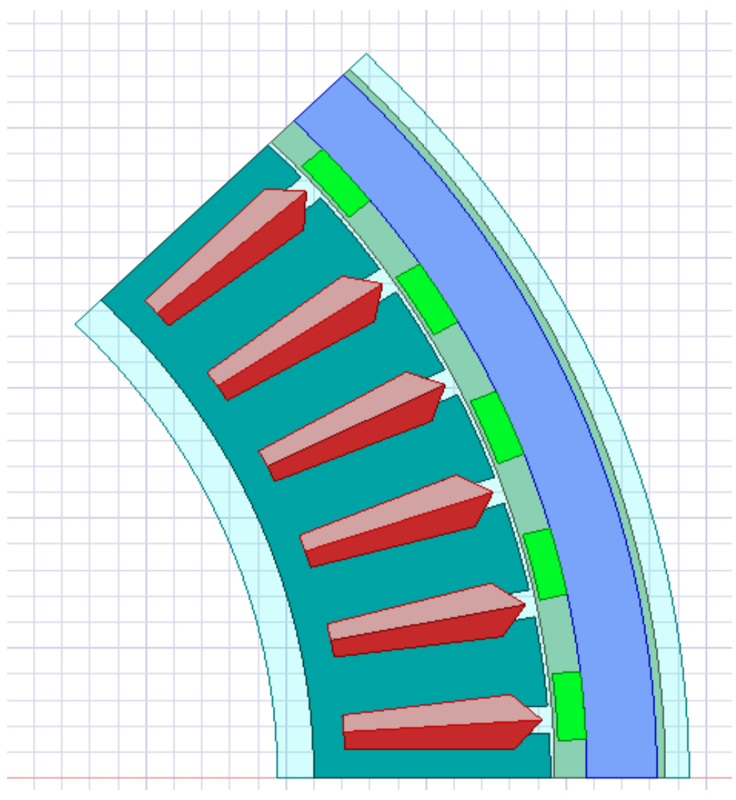
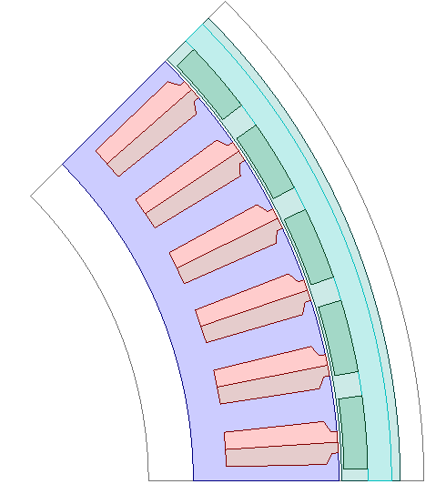
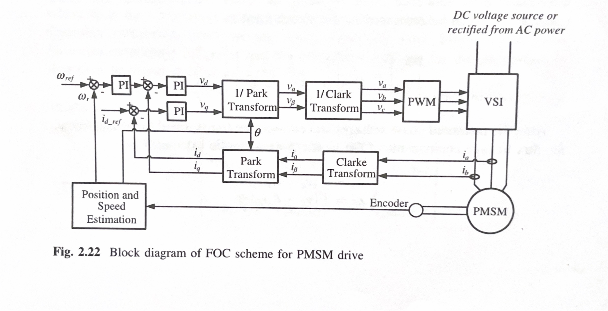
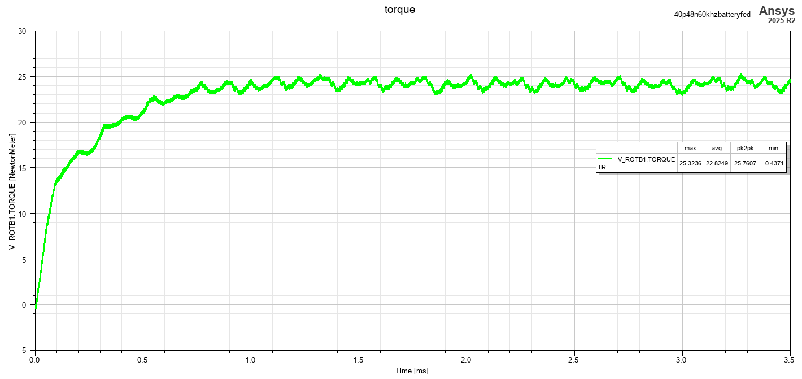
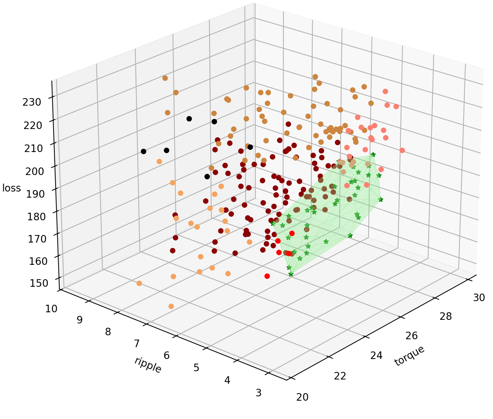

Maschinell unterstützte Co-Optimierung von Motorgeometrie und Hochfrequenz-Schaltparametern des Wechselrichters für elektrische UAV-Antriebe
Ziel
Die Co-Optimierung des Elektroantriebs für ein UAV-System wird versucht, wobei der Schwerpunkt auf Wechselrichter- und Motorparametern liegt, mit dem Ziel, die Optimierungszeit zu verkünken, wobei der Wechselrichter sich auf Hochfrequenz-Wechselrichter konzentriert. Die Gesamtidee besteht darin, die Problemdefinition per Simulation zu realisieren und für jeden Anwendungsfall des Drohnendesigns nach dem optimalen Sweet Spot zu suchen. Die manuelle Suche im Entwurfsraum erfordert hohe Rechenkosten und würde Jahre brauchen, um zu konvergieren, und daher einen ML-Ansatz mit Modellierung und Vorhersage. Eine einzelne FEA-Analyse dauert 2 Stunden, um in das Ergebnis für die Erzeugung von 2 elektrischen Zyklen für den Motor zu konvergieren.
Ansatz
Diese Arbeit stellt eine neuartige Co-Design-Methodik auf Systemebene vor, um dieses Problem zu lösen. Die Idee ist, eine umfassende Datenbasis zu generieren, indem eine große Anzahl von Simulationen über eine Reihe von Motorgeometrien und Wechselrichter-Schaltparametern ausgeführt wird. Dieser Datensatz wird dann verwendet, um ein Ersatz-Regressormodell für maschinelles Lernen zu trainieren, das die Leistung von elektrischen Antriebssystemen vorhersagen kann. Durch die Integration dieses trainierten Ersatzmodells in die op+miza+on-Schleife soll das vorgeschlagene Framework den Prozess dramatisch beschleunigen, indem das gleichzeitige Op+Miza+on der Motorgeometrie und der Wechselrichter-Schaltparameter ermöglicht wird, um die Gesamtleistung des elektrischen UAV-Antriebssystems zu maximieren.
Erstes Design
Der anfängliche Querschnitt des Motors war wie im Bild unten angegeben:

Endgültiges Motordesign
Das endgültige Design des Motors wurde mit einem UPD-Stator aktualisiert, um noch mehr Feinabstimmung und allgemeine Kontrolle über die Motorparameter zu haben

FOC-Kontrollverhaltensmodell
Eine FOC-Steuerung des Verhaltensmodells wurde mit integrierter Clarkes- und Parkes-Transformation entwickelt, um die Drohne in der Nähe des Bereichs mit minimalem Drehmomentwellen zu betreiben. Das Blockdiagramm des FOC-Systems, das aus 1 entnommen ist, ist unten angegeben:

Eingabeparameter
Die in Betracht gezogenen Eingabeparameter sind:
Bs1: Maximale Breite des Steckplatzkeils entnommen aus 2
Bs2: Untere Breite des Schlitzkörpers (0 für parallele Zähne) 2
Höhe des Magneten
Dicke des Magneten
Wechselrichter-Schaltfrequenz (Hochfrequenzen)
Was durch Sensitivitätsanalyse und Pearsons Korrelationskoeffizientenberechnung gefunden wurde.
Ausgabeparameter
Drehmoment, Drehmomentwelle und Verluste werden berechnet. Für die Referenz sind die Drehmomentdiagramme unten angehängt:

Der Durchschnitt dieser Werte wird für jeden Entwurfspunkt ausgewählt und ein vollständiges faktorielles Design wird mit Python-Skripten mit PyAEDT erstellt.
Datenvisualisierung
Das 3D-Diplot wird mit den Ausgabeparametern entlang jeder der Achsen wie folgt in Python erstellt:

Weitere Analyse
Das Surrogate-Modell für maschinelles Lernen muss auf dem Datensatz erstellt und analysiert werden, um schlussfolge Ergebnisse mit Kreuzverifizierung der optimalen Punkte mit FEA-Analyse zu erhalten.